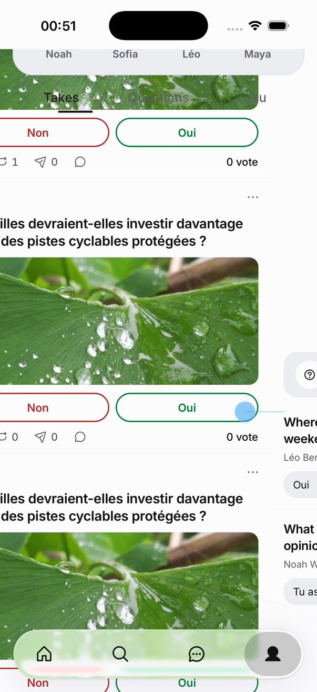
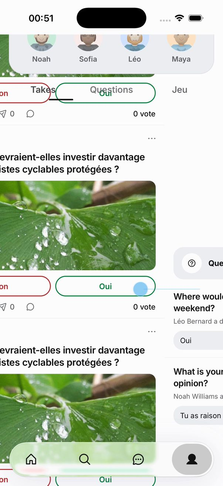
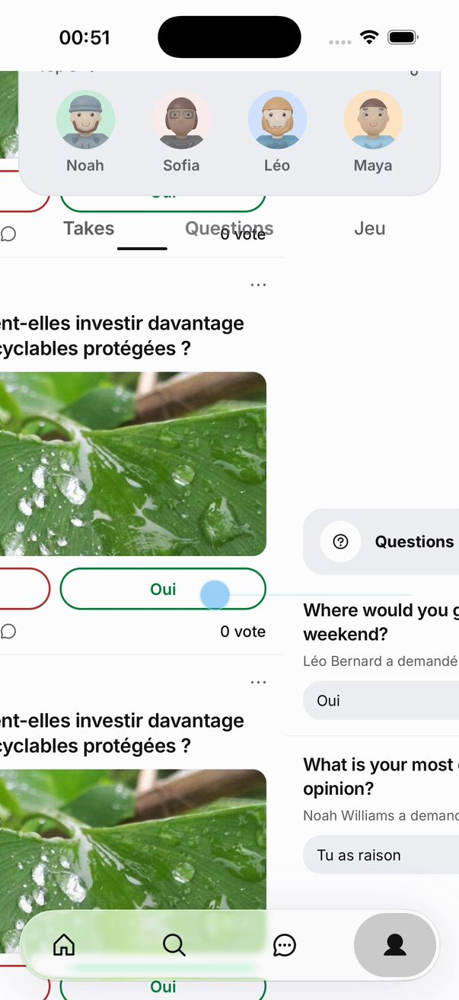
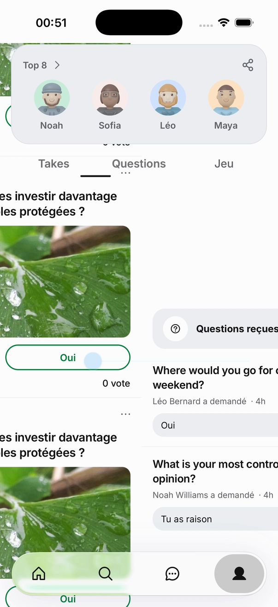
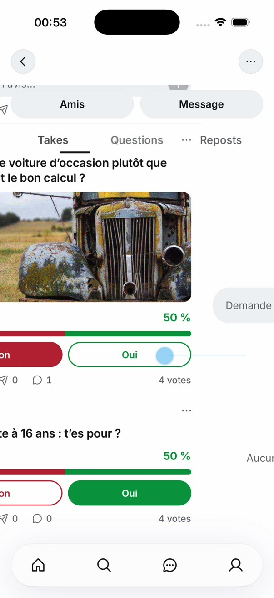

Le glissé entre les onglets : 10 façons de le rendre beau
Pour Adam, le 06/10/2026. Tu as écrit : « quand je passe de Takes à Qst et que j'ai scroll dans Takes et que je suis en bas, si je swipe doucement on voit le haut apparaître en transparent petit à petit, je trouve pas ça beau ». Ici, on ne touche à aucun code de l'app. C'est toi qui choisis.
Ce qui se passe aujourd'hui, et pourquoi
Le mécanisme, lu dans le code (main, 647fe5a).
- Les onglets du profil partagent un seul en-tête, posé par-dessus les pages et décalé de
-headerRise(ProfilePager.tsx:617). headerRisepasse de la hauteur repliée de Takes à celle de Questions, en suivant les pages image par image (sharedLift,profile-pager-scroll.ts:58).- Questions est court : la page ne peut pas monter, ou très peu. Elle monte de 0 pt sur le profil filmé par Gon cette nuit, et de 64 pt avec les questions du 05/10. Il faudrait 388 pt pour replier tout le haut. Pendant le glissé, le haut redescend donc de 324 à 388 pt. Depuis #3866, une page courte ne défile plus au-delà de sa dernière ligne (
scrollEnd,profile-pager-scroll.ts:96), comme tu l'avais demandé le 05/10. - Le haut n'a pas de fond, pour laisser voir le dégradé de la page (
profile.tsx:955). Le fond de la rangée d'onglets s'efface dès le premier point de descente :interpolate(headerRise, [fold - 1, fold], [0, 1])(ProfilePager.tsx:631-634). - Résultat : pendant toute la descente, le haut est transparent au-dessus des takes.
Cotes lues dans les captures et le code : écran de 402 × 874 pt, barre d'état de 54 pt, en-tête de 388 pt, rangée d'onglets de 48 pt (mots de 16,5 pt, trait de 44 × 2,5 pt, 7 pt sous le mot : profile-tab-layout.ts:16-24), Questions qui ne monte pas (0 pt), comme dans les captures de cette nuit.
La preuve, filmée cette nuit sur notre app (Gon, 00:51)
Ton profil : glissé lent, du bas de Takes vers Questions, toutes les 0,4 s. À droite, le profil d'un ami (Maya) avec le même geste, à 00:53.





Où ce défaut existe dans l'app : le recensement
J'ai cherché tous les écrans à pages du code (NativeTabPages, ProfilePager, les pages de l'accueil). Sur staging, le pager natif est allumé (/config : nativeTabPager: true, lu à 00:42).
| Écran | Le geste | Ce qu'on voit | Pourquoi, dans le code | Fondu ? |
|---|---|---|---|---|
| Ton profil (Takes, Questions, Jeu) | Descendre loin dans Takes, puis glisser lentement vers Questions ou vers Jeu. | Le haut du profil redescend en transparence par-dessus les takes, et la bande des onglets perd son fond. | ProfilePager.tsx:617-634, profile.tsx:955 (le haut n'a pas de fond) | Oui, le pire cas |
Le profil d'un ami (u/[username]) | Pareil : en bas de Takes, glisser vers Questions ou Jeu. | Pareil : le même composant tourne là aussi. Vu en vidéo sur le profil de Maya (image de droite ci-dessus). | u/[username].tsx:1565 (même ProfilePager, même bande) | Oui |
| Accueil, Takes ↔ Amis | Descendre dans Takes, ce qui cache la barre du haut, puis glisser vers Amis. | Pendant le glissé, la barre reste cachée. Au lâcher, « Takes Amis À proximité » revient en fondu (opacité 0 → 1 en 220 ms, avec 10 pt de montée), par-dessus le fil qui bouge. | HomeTopBar.tsx:147 (showChromeOf), HomeTopBar.tsx:170-177 (la barre suit son opacité), HomeTopBar.tsx:50 (220 ms) | Oui, plus court |
| Accueil, Amis ↔ À proximité | Descendre dans Amis, puis passer à À proximité. | Les deux vues lisent le même compteur de défilement : la barre ne bouge pas. | HomeTopBar.tsx:61-65 (index → un seul compteur) | Non |
| Explorer, les thèmes | Descendre dans un thème, glisser vers le suivant. | La recherche et les onglets restent en place et opaques ; chaque thème garde sa position. (Ton souci de 00:25, « le haut ne se décale pas », est un autre sujet.) | ExploreScreen.tsx:1189-1260 (le haut est hors des pages), :1351 pages natives. Sans le pager natif, le contenu se fond (:416-421). | Non |
| Recherche, pages de résultats | Descendre dans « Top », glisser vers « Comptes ». | Comme Explorer : les onglets sont fixes et opaques. | ExploreScreen.tsx:1419 | Non |
| Notifications, filtres | Descendre (les filtres se cachent en glissant vers le haut), puis changer de filtre. | Les filtres reviennent d'un coup, opaques. C'est un saut, pas un fondu. | notifications.tsx:585-591 (filterCollapse.set(0) sans animation). Sans le pager natif, la liste se fond (:569-575). | Non (un saut) |
| Ton activité | Descendre dans Votes, glisser vers Anonymes. | Les onglets sont au-dessus des pages, fixes et opaques. | settings/activity.tsx:150-182 | Non |
Il y a donc deux familles. D'abord les deux profils : un en-tête partagé et sans fond qui redescend au doigt. Ensuite l'accueil, où la barre revient en fondu après le glissé. Chaque maquette dit ce qu'elle fait dans les deux cas. Les deux profils sont prouvés en vidéo. Pour l'accueil, l'enregistrement a échoué (fichier vide) : cette ligne vient du code seul, et c'est le cas à faire filmer en premier.
Comment font les autres
- X, Explorer (ta vidéo du 06/10 à 00:31). On descend loin dans « Explore », puis on glisse vers « Trending ». La recherche et les onglets reviennent entiers et opaques dès le début du glissé. Trending reprend sa propre position (les sujets 23 à 30), et rien n'apparaît en transparence.
- X, profil (ta vidéo du 02/10, analysée à 60 images par seconde). Sur un onglet presque vide, l'en-tête reste replié en entier. En haut, une barre affiche ← , le nom et « N posts », et les onglets restent épinglés.
- Bluesky (code ouvert). L'en-tête a un fond plein,
t.atoms.bg. Au début d'un glissé, les autres pages sont placées àmin(scrollY, hauteur de l'en-tête). Les listes courtes ont une hauteur minimale de « écran + en-tête », pour pouvoir quand même replier le haut. Sources : PagerWithHeader.tsx et ProfileFeedgens.tsx (minHeight: height + headerOffset). - Bibliothèque « collapsible tab » : « Tab switches never move the header ». L'en-tête a sa propre valeur, et un onglet court reçoit assez de place pour qu'il se replie quand même. Source : nick87kelly/react-native-collapsible-tab. Elle répare aussi le « blank space / ghost header on tab switch » de la plus connue, react-native-collapsible-tab-view.
- Instagram : ta règle du 02/10 dit que l'en-tête reste replié et que chaque onglet garde sa position. Je n'ai pas trouvé de source publique qui décrive le cas d'un onglet court.
- Threads et TikTok : je n'ai pas trouvé de source publique fiable, et je n'ai pas leurs apps ici. Je n'invente rien. Une vidéo de ta part trancherait.
Ce que les sources trouvées ont en commun : un en-tête toujours opaque, et jamais de fondu. Les maquettes 1, 2, 7, 8 et 10 suivent X et Bluesky, qui gardent le haut replié. Les maquettes 3, 4, 5, 6 et 9 font redescendre le haut, mais toujours plein.
Les 10 maquettes
Chaque téléphone joue un glissé lent, une pause, puis un glissé rapide. « Aujourd'hui » rejoue le défaut sur le même téléphone. La règle commune aux dix : aucun fondu, rien ne change d'opacité, tout bouge par déplacement.